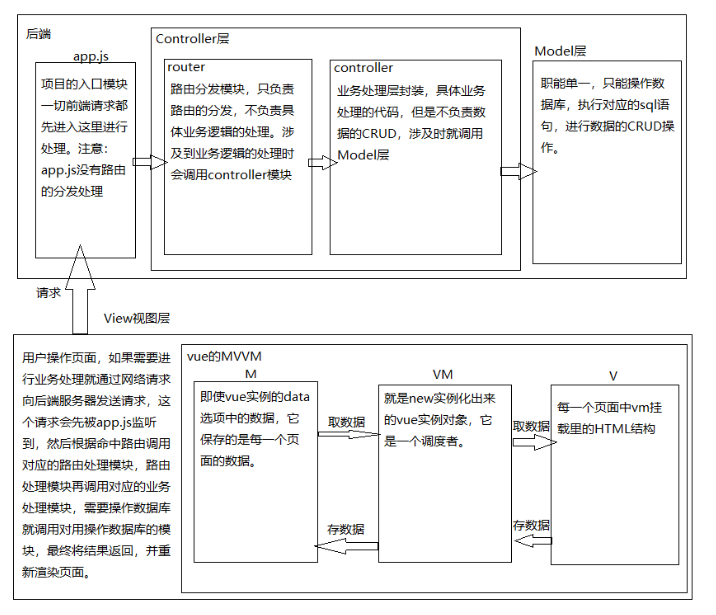

Vue (读音 /vju:/,类似于 view) 是一套用于构建web用户界面的渐进式前端框架。 所谓渐进式就是可以根据实际需求一步一步阶段性的使用Vue.js,最核心的是视图层渲染、然后是组件机制、路由、状态管理、构建工具等需要那个功能模块就引入那个。 也是目前最火的一个前端框架,它与angular.js、react.js 并称前端三大主流框架。
框架:是一套完整的解决方案,对整个项目的侵入性较大。 库(插件):提供了某一个特点的小功能,对项目的侵入性较小。 vuejs的核心库其实就是一个库(插件)跟jQuery类似,但是当它与其它的各种插件结合就会形成一套完整的解决方案也就是框架了。 在说vue时就是默认为框架,本质上不用细究。
遵循MVVM模式,生态丰富。 编码简洁,轻量,运行效率高,适合pc/移动端开发。 本身只关注UI,动态构建用户界面,组件可复用。
MVC是后端分层开发的概念,最早出现在java领域。
M(model):模型,即提供数据的数据库
V(view):视图,负责显示给用户看的页面
C(controller):控制器,用户操作响应的控制
即:用户通过控制器来操作数据库中的数据以达到视图的变化。
MVVM是前端视图层的分层开发思想,主要关注视图层的分离。vuejs在设计上也使用这个模式。
它把每一个页面都分成 M,V,VM三部分。其中VM是核心,它是M与V之间的调度者。v和vm之间就是通过双向数据绑定建立联系的。
一个前端应用处理过程中的MVC和MVVM对比,如下图所示:

借鉴了angular的模板语法和数据绑定技术 借鉴了react的组件化和虚拟DOM技术
声明式渲染、条件和循环、事件监听、vue指令、过渡和动画等。